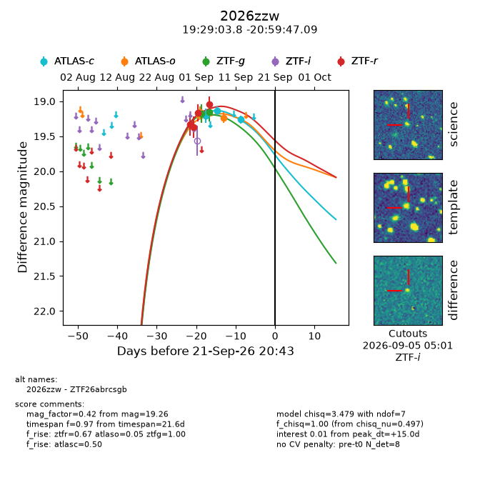
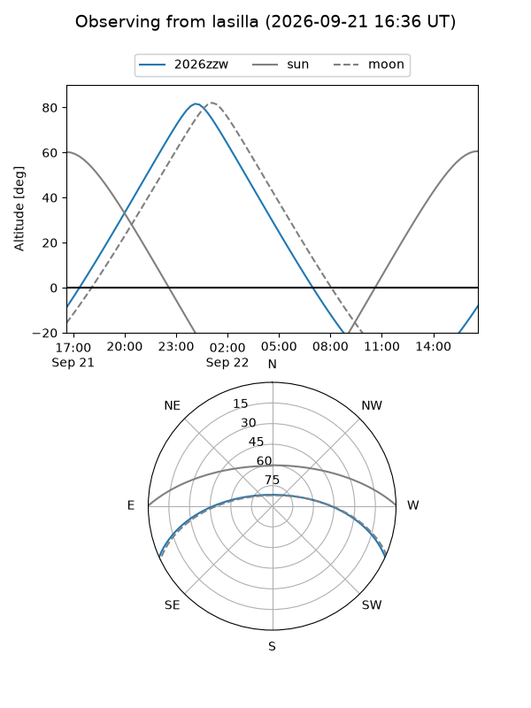
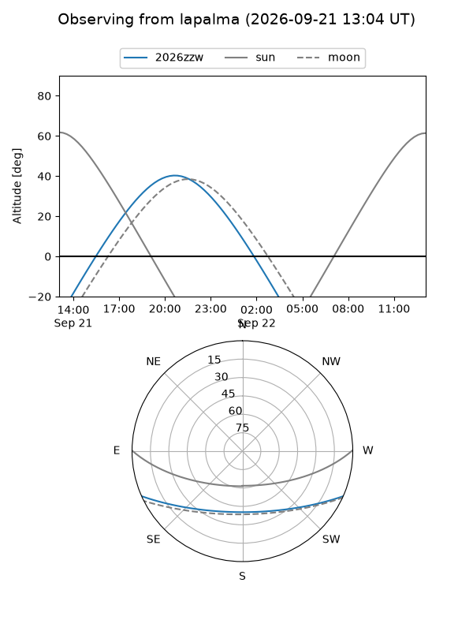
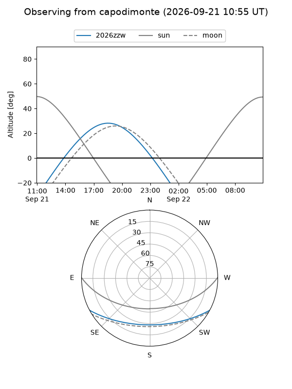
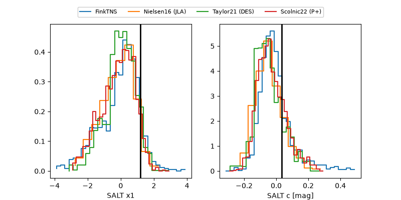

2026zzw
Target 2026zzw at 2026-09-21 20:45
Aliases and brokers:
FINK-ZTF: ztf.fink-portal.org/ZTF26abrcsgb
Lasair-ZTF: lasair-ztf.lsst.ac.uk/objects/ZTF26abrcsgb
ALeRCE-ZTF: alerce.online/object/ZTF26abrcsgb
YSE-PZ: ziggy.ucolick.org/yse/transient_detail/2026zzw
TNS name: wis-tns.org/object/2026zzw
Direct TNS query: direct search
alt names
ZTF26abrcsgb (ztf,fink_ztf)
2026zzw (tns,yse)
Coordinates:
equatorial (ra, dec) = 292.2659,-20.99641
equatorial (HMS+DMS) = 19:29:03.81,-20:59:47.09
galactic (l, b) = (17.7857,-17.40847)
Flags:
TNS type: nan
peak dt: +15.0
Photometry:
last atlasc=19.26, atlaso=19.23, ztfg=19.16, ztfr=19.04
3 atlasc, 2 atlaso, 2 ztfg, 4 ztfr detections
Lightcurve

Visibility



Additional plots
